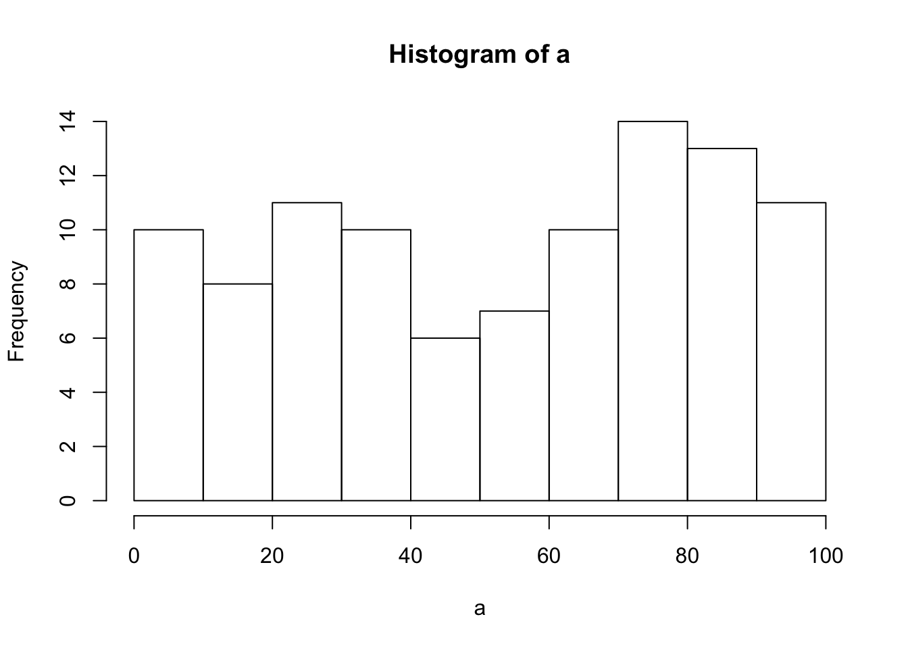

Do simple math with numbers, addition, subtraction, multiplication, division
1+1 ## [1] 23-2## [1] 14*6## [1] 245/7## [1] 0.7142857Put numbers into variables, do simple math on the variables
Norie <-1
ABC <-537848756781637
a <-1
b <-"five"
a+bWrite code that will place the numbers 1 to 100 separately into a variable using for loop. Then, again using the seq function.
Numbers_List <-seq(1:100)
for (i in 1:length(Numbers_List)){
print(Numbers_List[[i]])
}## [1] 1
## [1] 2
## [1] 3
## [1] 4
## [1] 5
## [1] 6
## [1] 7
## [1] 8
## [1] 9
## [1] 10
## [1] 11
## [1] 12
## [1] 13
## [1] 14
## [1] 15
## [1] 16
## [1] 17
## [1] 18
## [1] 19
## [1] 20
## [1] 21
## [1] 22
## [1] 23
## [1] 24
## [1] 25
## [1] 26
## [1] 27
## [1] 28
## [1] 29
## [1] 30
## [1] 31
## [1] 32
## [1] 33
## [1] 34
## [1] 35
## [1] 36
## [1] 37
## [1] 38
## [1] 39
## [1] 40
## [1] 41
## [1] 42
## [1] 43
## [1] 44
## [1] 45
## [1] 46
## [1] 47
## [1] 48
## [1] 49
## [1] 50
## [1] 51
## [1] 52
## [1] 53
## [1] 54
## [1] 55
## [1] 56
## [1] 57
## [1] 58
## [1] 59
## [1] 60
## [1] 61
## [1] 62
## [1] 63
## [1] 64
## [1] 65
## [1] 66
## [1] 67
## [1] 68
## [1] 69
## [1] 70
## [1] 71
## [1] 72
## [1] 73
## [1] 74
## [1] 75
## [1] 76
## [1] 77
## [1] 78
## [1] 79
## [1] 80
## [1] 81
## [1] 82
## [1] 83
## [1] 84
## [1] 85
## [1] 86
## [1] 87
## [1] 88
## [1] 89
## [1] 90
## [1] 91
## [1] 92
## [1] 93
## [1] 94
## [1] 95
## [1] 96
## [1] 97
## [1] 98
## [1] 99
## [1] 100Find the sum of all the integer numbers from 1 to 100
Numbers_List <-seq(1:100)
for (i in 1:length(Numbers_List)){
print(Numbers_List[[i]])
}## [1] 1
## [1] 2
## [1] 3
## [1] 4
## [1] 5
## [1] 6
## [1] 7
## [1] 8
## [1] 9
## [1] 10
## [1] 11
## [1] 12
## [1] 13
## [1] 14
## [1] 15
## [1] 16
## [1] 17
## [1] 18
## [1] 19
## [1] 20
## [1] 21
## [1] 22
## [1] 23
## [1] 24
## [1] 25
## [1] 26
## [1] 27
## [1] 28
## [1] 29
## [1] 30
## [1] 31
## [1] 32
## [1] 33
## [1] 34
## [1] 35
## [1] 36
## [1] 37
## [1] 38
## [1] 39
## [1] 40
## [1] 41
## [1] 42
## [1] 43
## [1] 44
## [1] 45
## [1] 46
## [1] 47
## [1] 48
## [1] 49
## [1] 50
## [1] 51
## [1] 52
## [1] 53
## [1] 54
## [1] 55
## [1] 56
## [1] 57
## [1] 58
## [1] 59
## [1] 60
## [1] 61
## [1] 62
## [1] 63
## [1] 64
## [1] 65
## [1] 66
## [1] 67
## [1] 68
## [1] 69
## [1] 70
## [1] 71
## [1] 72
## [1] 73
## [1] 74
## [1] 75
## [1] 76
## [1] 77
## [1] 78
## [1] 79
## [1] 80
## [1] 81
## [1] 82
## [1] 83
## [1] 84
## [1] 85
## [1] 86
## [1] 87
## [1] 88
## [1] 89
## [1] 90
## [1] 91
## [1] 92
## [1] 93
## [1] 94
## [1] 95
## [1] 96
## [1] 97
## [1] 98
## [1] 99
## [1] 100sum(Numbers_List)## [1] 5050Write a function to find the sum of all integers between any two values.
List all of the odd numbers from 1 to 100.
Odd_numbers <-seq(1, 99, 2)
print(Odd_numbers)## [1] 1 3 5 7 9 11 13 15 17 19 21 23 25 27 29 31 33 35 37 39 41 43 45
## [24] 47 49 51 53 55 57 59 61 63 65 67 69 71 73 75 77 79 81 83 85 87 89 91
## [47] 93 95 97 99List all of the prime numbers from 1 to 1000.
Prime_Numbers <-(1:500)*2
print(Prime_Numbers)## [1] 2 4 6 8 10 12 14 16 18 20 22 24 26 28
## [15] 30 32 34 36 38 40 42 44 46 48 50 52 54 56
## [29] 58 60 62 64 66 68 70 72 74 76 78 80 82 84
## [43] 86 88 90 92 94 96 98 100 102 104 106 108 110 112
## [57] 114 116 118 120 122 124 126 128 130 132 134 136 138 140
## [71] 142 144 146 148 150 152 154 156 158 160 162 164 166 168
## [85] 170 172 174 176 178 180 182 184 186 188 190 192 194 196
## [99] 198 200 202 204 206 208 210 212 214 216 218 220 222 224
## [113] 226 228 230 232 234 236 238 240 242 244 246 248 250 252
## [127] 254 256 258 260 262 264 266 268 270 272 274 276 278 280
## [141] 282 284 286 288 290 292 294 296 298 300 302 304 306 308
## [155] 310 312 314 316 318 320 322 324 326 328 330 332 334 336
## [169] 338 340 342 344 346 348 350 352 354 356 358 360 362 364
## [183] 366 368 370 372 374 376 378 380 382 384 386 388 390 392
## [197] 394 396 398 400 402 404 406 408 410 412 414 416 418 420
## [211] 422 424 426 428 430 432 434 436 438 440 442 444 446 448
## [225] 450 452 454 456 458 460 462 464 466 468 470 472 474 476
## [239] 478 480 482 484 486 488 490 492 494 496 498 500 502 504
## [253] 506 508 510 512 514 516 518 520 522 524 526 528 530 532
## [267] 534 536 538 540 542 544 546 548 550 552 554 556 558 560
## [281] 562 564 566 568 570 572 574 576 578 580 582 584 586 588
## [295] 590 592 594 596 598 600 602 604 606 608 610 612 614 616
## [309] 618 620 622 624 626 628 630 632 634 636 638 640 642 644
## [323] 646 648 650 652 654 656 658 660 662 664 666 668 670 672
## [337] 674 676 678 680 682 684 686 688 690 692 694 696 698 700
## [351] 702 704 706 708 710 712 714 716 718 720 722 724 726 728
## [365] 730 732 734 736 738 740 742 744 746 748 750 752 754 756
## [379] 758 760 762 764 766 768 770 772 774 776 778 780 782 784
## [393] 786 788 790 792 794 796 798 800 802 804 806 808 810 812
## [407] 814 816 818 820 822 824 826 828 830 832 834 836 838 840
## [421] 842 844 846 848 850 852 854 856 858 860 862 864 866 868
## [435] 870 872 874 876 878 880 882 884 886 888 890 892 894 896
## [449] 898 900 902 904 906 908 910 912 914 916 918 920 922 924
## [463] 926 928 930 932 934 936 938 940 942 944 946 948 950 952
## [477] 954 956 958 960 962 964 966 968 970 972 974 976 978 980
## [491] 982 984 986 988 990 992 994 996 998 1000Generate 100 random numbers
rnorm(100) ## [1] 0.760766924 2.248044380 -0.551984660 1.172254001 -0.226615492
## [6] -1.205577731 -1.216618461 0.908544619 -0.279476098 1.249393017
## [11] -1.202615868 0.926660503 0.132723080 -2.510649811 -0.837573182
## [16] -0.590033391 -0.071246805 -1.439772979 -1.383982764 1.201123105
## [21] -0.529298535 -0.934088577 0.133010268 1.683081582 -1.653362473
## [26] 0.386622589 -1.049988142 -0.792999330 -0.058358616 2.111186569
## [31] 1.419135165 0.788010560 -0.191128062 -0.011495658 -0.286477438
## [36] 0.667256045 1.068266679 -1.096054942 0.357957520 -0.402025865
## [41] 0.666820405 -0.202655468 -0.710392291 -0.055713444 -0.087944945
## [46] 0.008342103 -0.119441295 -0.523194977 0.640205606 1.807097379
## [51] -2.119695169 0.614473831 -0.598712676 0.167024848 -0.019610814
## [56] 1.135698076 0.197106033 0.266673055 1.671865587 -1.094029185
## [61] 0.514158612 -0.379699574 -0.640069559 -1.818621538 -0.177177787
## [66] 1.443135266 -1.020529153 -0.692323450 -0.750363525 0.259108338
## [71] -1.000516709 1.082891581 0.844523542 0.194693896 0.870325396
## [76] 0.004955099 -0.695908257 0.861107343 -1.118158086 0.544730969
## [81] -1.019625248 -1.392102072 -0.549938439 -1.100724371 1.485693139
## [86] 1.440718508 -0.457289681 -0.060672754 -0.009025883 0.046732130
## [91] 1.732199977 1.133309172 -0.787692149 -0.162847209 0.397810780
## [96] -0.691169322 0.639588117 0.090340299 0.195869713 0.158931313Generate 100 random numbers within a specific range
rnorm(100, mean = 6, sd = 6)## [1] 15.48583247 4.67900821 9.51533067 14.15137778 -0.08701889
## [6] -3.31847686 0.52265829 7.37528536 12.11364651 0.13859231
## [11] 5.41338183 1.25132683 5.82448290 8.35776438 -0.75562193
## [16] 6.92317689 -1.23239846 8.82192534 19.03259376 15.39819797
## [21] -1.98686783 -4.94858096 5.82703758 0.41197950 4.63004425
## [26] 6.03151936 4.56968425 7.55926535 -0.70388672 9.51480923
## [31] -8.77287966 3.56654943 11.02261592 17.18943932 -3.32305467
## [36] 2.61192913 5.26642639 8.96567447 0.33460927 13.14159983
## [41] 11.34917109 6.37793237 22.05987675 -2.15951314 9.23220937
## [46] 3.98845856 12.16662271 6.77817236 -0.53711792 4.02292999
## [51] 0.37330136 7.24354945 -0.98945051 7.62123915 13.09501382
## [56] -1.93168920 7.53710927 0.52745355 -1.98965751 8.71648485
## [61] -4.16784784 9.40508549 9.07997407 6.97586283 -5.75783480
## [66] 1.28120231 9.57515717 5.68194250 3.76628978 1.50347236
## [71] -2.44230182 7.49286065 3.89612428 3.61869282 9.09212983
## [76] 6.47563622 8.05288977 13.06979184 10.38551723 9.50132507
## [81] 2.73457867 6.58421422 8.88331902 1.76228721 7.90651851
## [86] 4.61248322 3.34794286 5.44782369 2.95557274 11.82427719
## [91] 5.80430492 8.83739034 1.72066027 6.21880096 10.33716656
## [96] 17.22402651 5.25322536 -7.93497003 -0.90822026 11.44387982Write your own functions to give descriptive statistics for a vector variable storing multiple numbers. Write functions for the following without using R intrinsics: mean, mode, median, range, standard deviation
x_mean <-c(1,3,9,-22,22,6,7,10,15,4,25)
my_fun <-function(x_mean){ sum(x_mean)/length(x_mean)}
print(my_fun(x_mean))## [1] 7.272727Y<-c(1,3,9,-22,22,6,7,10,15,4,25,22,56,7,22,22)
table(Y)## Y
## -22 1 3 4 6 7 9 10 15 22 25 56
## 1 1 1 1 1 2 1 1 1 4 1 1C=table(Y)
names(which.max(C))## [1] "22"Count the number of characters in a string variable.
Count1 <-c(1,3,9,-22,22,6,7,10,15,4,25)
length(Count1)## [1] 11Count the number of words in a string variable
letter<-c("jtymhrtyoilnk")
strsplit(letter, split = "")## [[1]]
## [1] "j" "t" "y" "m" "h" "r" "t" "y" "o" "i" "l" "n" "k"length(letter)## [1] 1Count the number of sentences in a string variable
strV<-"How can we understand R if we don't read"
sapply(strsplit(strV," "),length)## [1] 9Count the number of times a specific character occurs in a string variable
Str1<-"bbbjshjfsiiiisihfksbjsuuuus"
(strsplit(Str1,""))## [[1]]
## [1] "b" "b" "b" "j" "s" "h" "j" "f" "s" "i" "i" "i" "i" "s" "i" "h" "f"
## [18] "k" "s" "b" "j" "s" "u" "u" "u" "u" "s"table(Str1)## Str1
## bbbjshjfsiiiisihfksbjsuuuus
## 1Do a logical test to see if one word is found within the text of another string variable.
Word<-"Learning"
sentence<-" Learning R is hard "
grepl(Word,sentence)## [1] TRUEPut the current computer time in milliseconds into a variable
print(as.numeric(Sys.time())*1000, digits=15)## [1] 1551112531219.79Output the contents of a variable to a .txt file
Create a variable that stores a 20x20 matrix of random numbers
Output any matrix to a txt file using commas or tabs to separate column values, and new lines to separate row values
The FizzBuzz Problem. List the numbers from 1 to 100 with the following constraints. If the number can be divided by three evenly, then print Fizz instead of the number. If the number can be divided by five evenly, then print Buzz instead of the number. Finally, if the number can be divided by three and five evenly, then print FizzBuzz instead of the number. The answer could look something like this:
for (a in 1:100) {
if (a %% 3 == 0) {print("Fizz")}
else if (a %% 5 == 0) {print("Buzz")}
else print(a)
}## [1] 1
## [1] 2
## [1] "Fizz"
## [1] 4
## [1] "Buzz"
## [1] "Fizz"
## [1] 7
## [1] 8
## [1] "Fizz"
## [1] "Buzz"
## [1] 11
## [1] "Fizz"
## [1] 13
## [1] 14
## [1] "Fizz"
## [1] 16
## [1] 17
## [1] "Fizz"
## [1] 19
## [1] "Buzz"
## [1] "Fizz"
## [1] 22
## [1] 23
## [1] "Fizz"
## [1] "Buzz"
## [1] 26
## [1] "Fizz"
## [1] 28
## [1] 29
## [1] "Fizz"
## [1] 31
## [1] 32
## [1] "Fizz"
## [1] 34
## [1] "Buzz"
## [1] "Fizz"
## [1] 37
## [1] 38
## [1] "Fizz"
## [1] "Buzz"
## [1] 41
## [1] "Fizz"
## [1] 43
## [1] 44
## [1] "Fizz"
## [1] 46
## [1] 47
## [1] "Fizz"
## [1] 49
## [1] "Buzz"
## [1] "Fizz"
## [1] 52
## [1] 53
## [1] "Fizz"
## [1] "Buzz"
## [1] 56
## [1] "Fizz"
## [1] 58
## [1] 59
## [1] "Fizz"
## [1] 61
## [1] 62
## [1] "Fizz"
## [1] 64
## [1] "Buzz"
## [1] "Fizz"
## [1] 67
## [1] 68
## [1] "Fizz"
## [1] "Buzz"
## [1] 71
## [1] "Fizz"
## [1] 73
## [1] 74
## [1] "Fizz"
## [1] 76
## [1] 77
## [1] "Fizz"
## [1] 79
## [1] "Buzz"
## [1] "Fizz"
## [1] 82
## [1] 83
## [1] "Fizz"
## [1] "Buzz"
## [1] 86
## [1] "Fizz"
## [1] 88
## [1] 89
## [1] "Fizz"
## [1] 91
## [1] 92
## [1] "Fizz"
## [1] 94
## [1] "Buzz"
## [1] "Fizz"
## [1] 97
## [1] 98
## [1] "Fizz"
## [1] "Buzz"Frequency Counts Take text as input, and be able to produce a table that shows the counts for each character in the text. This problem is related to the earlier easy problem asking you to count the number of times that a single letter appears in a text. The slightly harder problem is the more general version: count the frequencies of all unique characters in a text.
a<-"some text that has some letters"Test the Random Number Generator Test the random number generator for a flat distribution. Generate a few million random numbers between 0 and 100. Count the number of 0s, 1s, 2s, 3s, etc. all the way up to 100. Look at the counts for each of the numbers and determine if they are relatively equal. For example, you could plot the counts in Excel to make a histogram. If all of the bars are close to being flat, then each number had an equal chance of being selected, and the random number generator is working without bias.
a<-runif(100,0,100)
hist(a)
Create a multiplication table Generate a matrix for a multiplication table. For example, the labels for the columns could be the numbers 1 to 10, and the labels for the rows could be the numbers 1 to 10. The contents of each of the cells in the matrix should be correct answer for multiplying the column value by the row value.
X<-c(1,2,3,4,5,6,7,8,9,10)
x*2## [1] 2 4 6 8 10 12 14 16 18 20 22 24for(i in 1:10) {
print(paste(X,'x', i, '=', X*i))
}## [1] "1 x 1 = 1" "2 x 1 = 2" "3 x 1 = 3" "4 x 1 = 4" "5 x 1 = 5"
## [6] "6 x 1 = 6" "7 x 1 = 7" "8 x 1 = 8" "9 x 1 = 9" "10 x 1 = 10"
## [1] "1 x 2 = 2" "2 x 2 = 4" "3 x 2 = 6" "4 x 2 = 8" "5 x 2 = 10"
## [6] "6 x 2 = 12" "7 x 2 = 14" "8 x 2 = 16" "9 x 2 = 18" "10 x 2 = 20"
## [1] "1 x 3 = 3" "2 x 3 = 6" "3 x 3 = 9" "4 x 3 = 12" "5 x 3 = 15"
## [6] "6 x 3 = 18" "7 x 3 = 21" "8 x 3 = 24" "9 x 3 = 27" "10 x 3 = 30"
## [1] "1 x 4 = 4" "2 x 4 = 8" "3 x 4 = 12" "4 x 4 = 16" "5 x 4 = 20"
## [6] "6 x 4 = 24" "7 x 4 = 28" "8 x 4 = 32" "9 x 4 = 36" "10 x 4 = 40"
## [1] "1 x 5 = 5" "2 x 5 = 10" "3 x 5 = 15" "4 x 5 = 20" "5 x 5 = 25"
## [6] "6 x 5 = 30" "7 x 5 = 35" "8 x 5 = 40" "9 x 5 = 45" "10 x 5 = 50"
## [1] "1 x 6 = 6" "2 x 6 = 12" "3 x 6 = 18" "4 x 6 = 24" "5 x 6 = 30"
## [6] "6 x 6 = 36" "7 x 6 = 42" "8 x 6 = 48" "9 x 6 = 54" "10 x 6 = 60"
## [1] "1 x 7 = 7" "2 x 7 = 14" "3 x 7 = 21" "4 x 7 = 28" "5 x 7 = 35"
## [6] "6 x 7 = 42" "7 x 7 = 49" "8 x 7 = 56" "9 x 7 = 63" "10 x 7 = 70"
## [1] "1 x 8 = 8" "2 x 8 = 16" "3 x 8 = 24" "4 x 8 = 32" "5 x 8 = 40"
## [6] "6 x 8 = 48" "7 x 8 = 56" "8 x 8 = 64" "9 x 8 = 72" "10 x 8 = 80"
## [1] "1 x 9 = 9" "2 x 9 = 18" "3 x 9 = 27" "4 x 9 = 36" "5 x 9 = 45"
## [6] "6 x 9 = 54" "7 x 9 = 63" "8 x 9 = 72" "9 x 9 = 81" "10 x 9 = 90"
## [1] "1 x 10 = 10" "2 x 10 = 20" "3 x 10 = 30" "4 x 10 = 40"
## [5] "5 x 10 = 50" "6 x 10 = 60" "7 x 10 = 70" "8 x 10 = 80"
## [9] "9 x 10 = 90" "10 x 10 = 100"Encrypt and Decrypt the Alphabet Turn any normal english text into an encrypted version of the text, and be able to turn any decrypted text back into normal english text. A simple encryption would be to scramble the alphabet such that each letter corresponds to a new randomly chosen (but unique) letter.
old <- c("A B C D E F G H I J K L M N O P Q R S T U V W X Y Z ", "a b c d e f g h i j k l m n o p q r s t u v w x y z", 0:9)
new <- sample(old)
old_string <- paste(old, collapse = "")
new_string <- paste(new, collapse = "")
encrypt <- function(message) {
chartr(old_string, new_string, message)
}
decrypt <- function(message) {
chartr(new_string, old_string, message)
}Your task here is to write an algorithm that can simulate playing the above depicted Snakes and Ladders board. You should assume that each roll of the dice produces a random number between 1 and 6. After you are able to simulate one played game, you will then write a loop to simulate 1000 games, and estimate the average number of dice rolls needed to successfully complete the game.
sample(c(1,2,3,4,5,6),2)## [1] 4 5total_sum<-0
number_of_rolls<-0
while(total_sum < 25){
number_of_rolls <- number_of_rolls+1
total_sum <-total_sum+sample(c(1,2,3,4,5,6),1)
}Dice-rolling simulations. Assume that a pair of dice are rolled. Using monte carlo-simulation, compute the probabilities of rolling a 2, 3, 4, 5, 6, 7, 8, 9, 10, 11, and 12, respectively.
R2<-sample(sample(2:12,size = 100,replace = TRUE, prob = table(outer(1:6,1:6,"+")) / 36)
)Monte Hall problem. The monte-hall problem is as follows. A contestant in a game show is presented with three closed doors. They are told that a prize is behind one door, and two goats are behind the other two doors. They are asked to choose which door contains the prize. After making their choice the game show host opens one of the remaining two doors (not chosen by the contestant), and reveals a goat. There are now two door remaining. The contestant is asked if they would like to switch their choice to the other door, or keep their initial choice. The correct answer is that the participant should switch their initial choice, and choose the other door. This will increase their odds of winning. Demonstrate by monte-carlo simulation that the odds of winning is higher if the participant switches than if the participants keeps their original choice.
100 doors problem. Problem: You have 100 doors in a row that are all initially closed. You make 100 passes by the doors. The first time through, you visit every door and toggle the door (if the door is closed, you open it; if it is open, you close it). The second time you only visit every 2nd door (door 2, 4, 6, etc.). The third time, every 3rd door (door 3, 6, 9, etc.), etc, until you only visit the 100th door.
Question: What state are the doors in after the last pass? Which are open, which are closed?
99 Bottles of Beer Problem In this puzzle, write code to print out the entire “99 bottles of beer on the wall”" song. For those who do not know the song, the lyrics follow this form: X bottles of beer on the wall X bottles of beer Take one down, pass it around X-1 bottles of beer on the wall
Where X and X-1 are replaced by numbers of course, from 99 all the way down to 0.
Random Tic-Tac-Toe Imagine that two players make completely random choices when playing tic-tac-toe. Each game will either end in a draw or one of the two players will win. Create a monte-carlo simulation of this “random” version of tic-tac-toe. Out 10,000 simulations, what proportion of the time is the game won versus drawn?